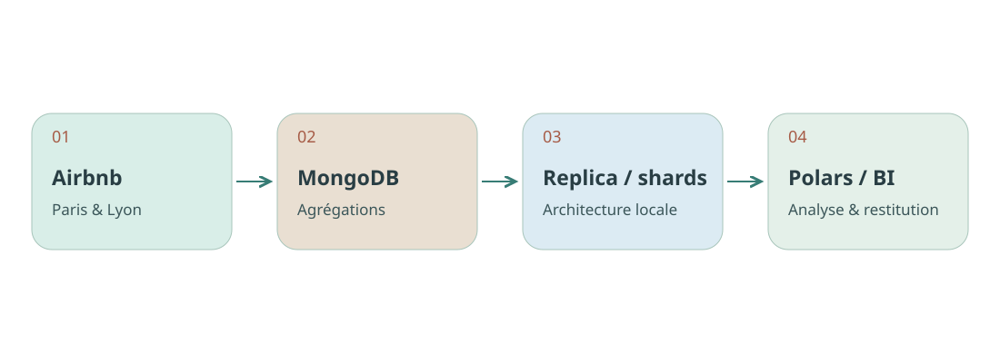

Schéma explicatif du périmètre décrit ; les environnements sont précisés dans l’étude.
Le besoin et ma contribution
Organiser et analyser des annonces de deux villes, tout en explorant les mécanismes de distribution de MongoDB. J’ai écrit les agrégations, les traitements Polars et expérimenté réplication et sharding.
Deux axes d’expérimentation
- Analyse : agrégations match/group/sort, calculs statistiques avec Polars et connexion de restitution Power BI.
- Architecture : replica set avec primaire, secondaire et arbitre ; exercice de bascule.
- Distribution : routeur mongos, configuration des shards Paris/Lyon et zones associées aux villes.
Relier clés et accès aux données
Le choix d’une clé de répartition doit être lu avec les requêtes attendues. Les zones et l’analyse des plans d’exécution permettent d’expliquer le ciblage d’une requête plutôt que de supposer qu’un cluster est automatiquement plus rapide.
Des preuves de mécanismes
Les livrables contiennent scripts d’agrégation, traitements Polars et captures de configuration/bascule. La présentation montre l’expérimentation des mécanismes ; elle ne constitue pas un benchmark comparatif de disponibilité.
Un laboratoire, pas un SLA
Tous les composants tournent sur une seule machine : cette configuration ne protège pas contre sa panne. Aucune garantie de disponibilité ni de délai de bascule n’est avancée. La fréquence des avis reste un indicateur indirect et ne mesure pas l’occupation réelle ni un effet causal des Jeux olympiques.
Code et éléments de preuve
Les extraits et résultats ci-dessous proviennent des livrables du projet, consultés le 16 novembre 2026. Les traitements n’ont pas été réexécutés pour cette présentation.